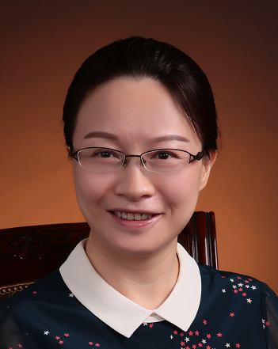

指导教师Faculty and Researchers
课题组由多位长期从事移动互联、边缘智能、无线网络和智能协同计算研究的教师共同指导。The team is guided by faculty and researchers working on mobile computing, edge intelligence, wireless networks, and collaborative computing.
教师队伍Team Faculty
TeachersTeachers
陈
陈亚丽 / Yali Chen
助理研究员Assistant Professor
徐
徐刚 / Gang Xu
工程师Engineer